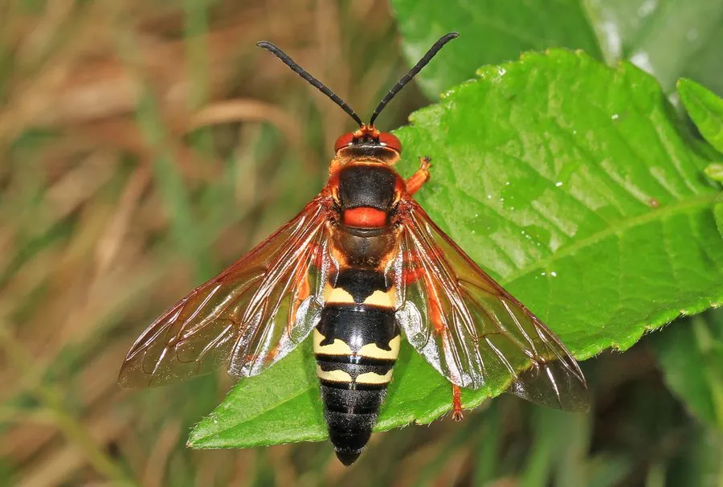

昆虫 · 动物界
蝉杀手泥蜂 Sphecius speciosus

北美洲的大型泥蜂，雌蜂在土中挖洞并捕猎蝉作为幼虫的食物，一次蜇刺使蝉麻痹，产卵后将巢口封住。
- 分类
- 门节肢动物门纲昆虫纲目膜翅目科泥蜂科属蝉猎泥蜂属
- 栖息环境
- 草原、疏林、花园与沙质土壤的开阔地
- 地理分布
- 北美洲，从加拿大南部到美国、墨西哥北部
- 保护级别
- 暂无评估
物种志
蝉杀手泥蜂成虫体长 3–5 cm，是体型较大的泥蜂。它的体色为黑褐与橙黄相间，腹部有橙色横带，翅透明而带褐色，足粗壮；雌蜂体形大于雄蜂，尾端有螫针；雄蜂没有螫针，但会驱赶入侵者。
蝉杀手泥蜂分布于北美洲，栖息于草原、疏林、花园和沙质土壤的开阔地。雌蜂在夏季挖出深达 20–30 cm 的洞穴，捕猎蝉后用螫针注入毒素使其麻痹，把蝉带回巢中，在蝉身上产一枚卵并封住洞口；幼虫孵化后以蝉为食，化蛹后翌年羽化。成虫取食花蜜，雄蜂会守卫领地并与雌蜂交配，常被误认为凶猛的大黄蜂，其实对人攻击性不强。它是研究独居蜂狩猎行为的好材料。
形态与习性
- 食性成虫取食花蜜，幼虫以麻痹的蝉为食
- 体长成虫 3–5 cm
- 体色黑褐色与橙黄色相间，腹部有橙色横带
- 繁殖雌蜂挖洞、捕蝉、产卵后封住巢口
- 巢穴洞穴深可达 20–30 cm
- 习性独居，雄蜂守卫领地，对人攻击性不强
趣味知识
- 雌蜂用螫针蜇刺使蝉麻痹，再拖回洞穴作为幼虫的食物。
- 它的地下洞穴可深达 20–30 cm，末端是育幼室。
- 蝉杀手泥蜂虽体型大，但对人攻击性并不强。
- 雄蜂会守卫领地并与雌蜂交配，但没有螫针。